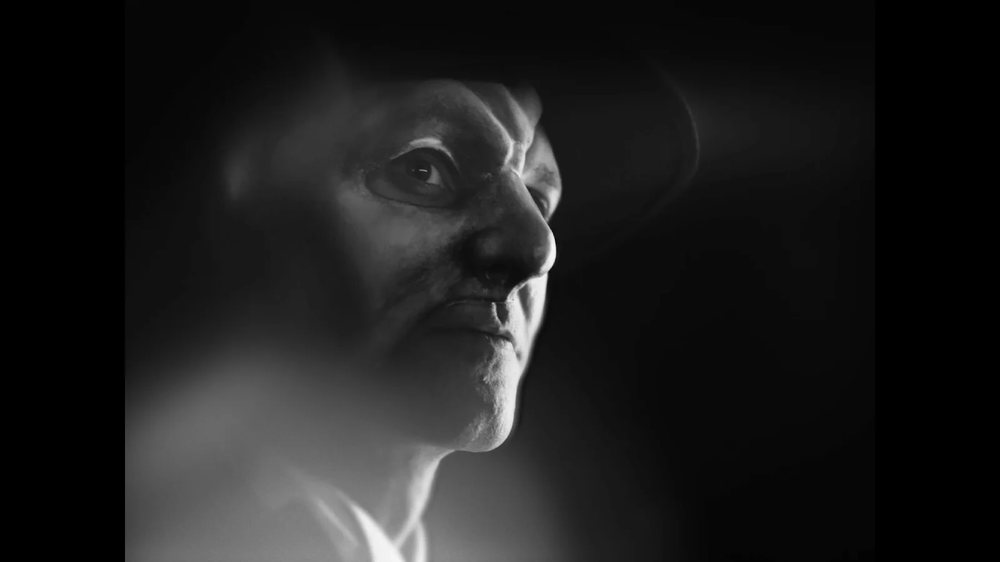
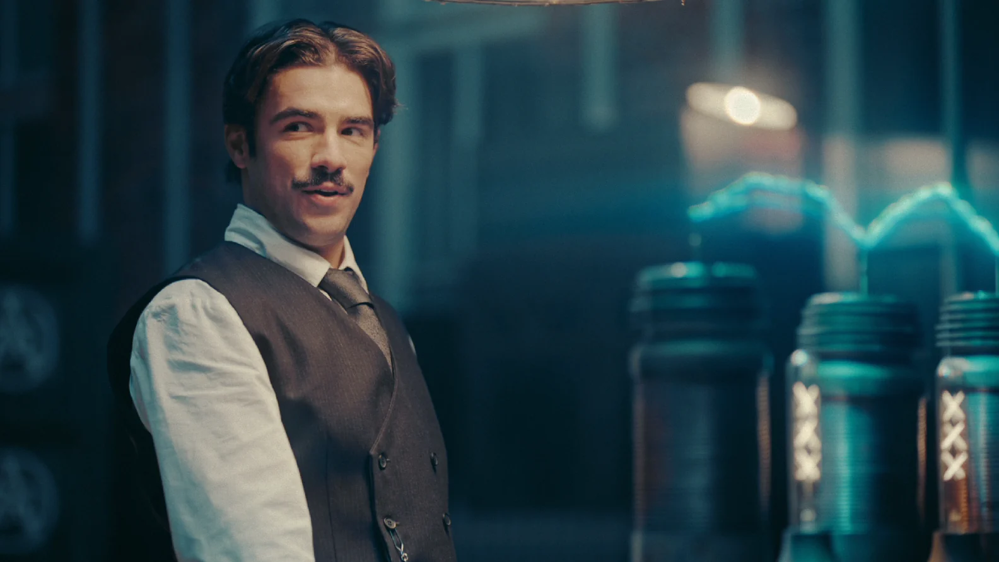
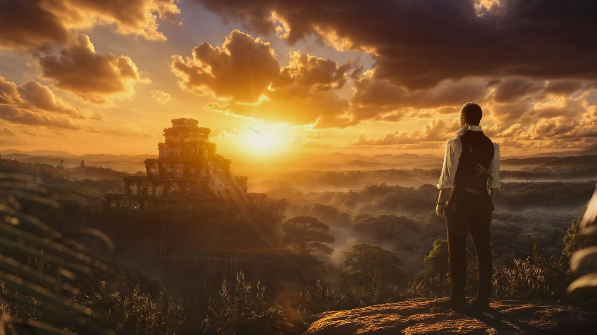
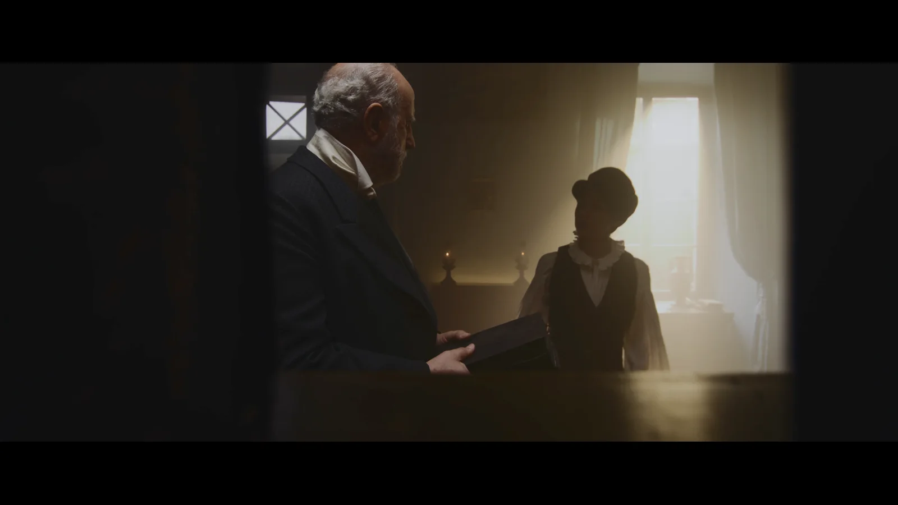
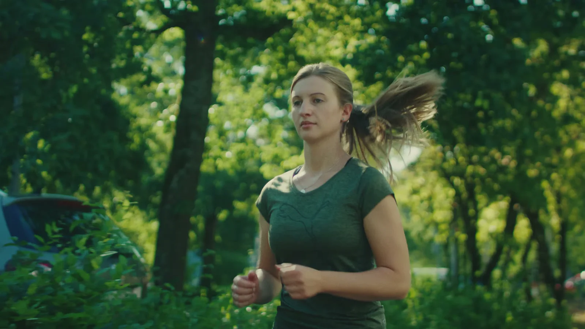
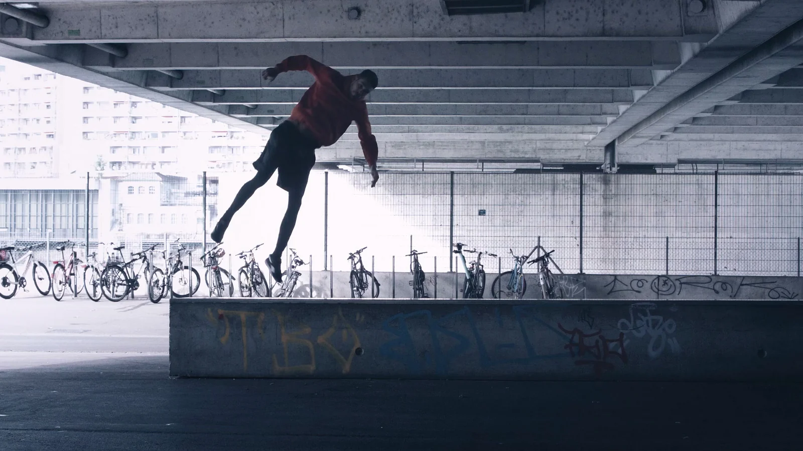
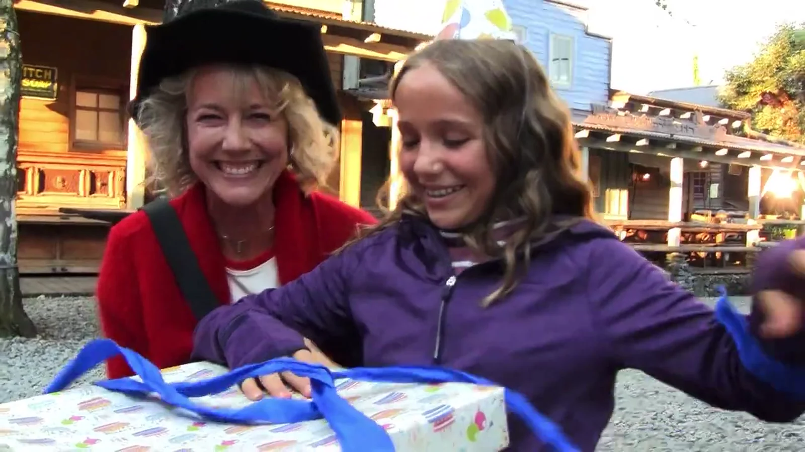

Arbeiten
Acht Filmprojekte. Mein Beitrag und die Zusammenarbeit dahinter.
Arbeiten entdeckenEntertainment · Markenfilm
Produktion · Kamera · Postproduktion

Projekt ansehenDas Phantom der Oper – Eurosat Coastiality
Europa-Park · Werbespot
Producer · Produktionsleitung · VFX

Projekt ansehenVoltron Nevera – It Works
Europa-Park · TV-Werbespot
Producer · Post-Production Supervisor · Logo-VFX

Projekt ansehenDJ BoBo – The Great Adventure
DJ BoBo · Tourtrailer
Producer · VFX · Motion Graphics

Projekt ansehenCastello dei Medici
Europa-Park · Kurzfilm zur Wiedereröffnung des Geisterschlosses
Producer · VFX · Logoanimation
 Projekt ansehen
Projekt ansehenHanhart × Europa-Park
Hanhart / Europa-Park · Brand Film
Kamera · Lichtsetzung

Projekt ansehenMOVIN Powerbreak
MOVIN am Loretto Berg · Imagefilm
Konzeption · Schnitt · Motion Design

Projekt ansehenEnergize Your Communications
X-Ray · Imagefilm
DoP · Schnitt · Color Grading · VFX

Projekt ansehen50 Jahre Europa-Park
Europa-Park · Jubiläumsfilm
Producer · Konzeption und Idee
Die Auswahl zeigt Projekte mit unterschiedlichen Aufgaben. Die jeweilige Case-Seite nennt meinen konkreten Beitrag und die dokumentierten Projekt-Credits.